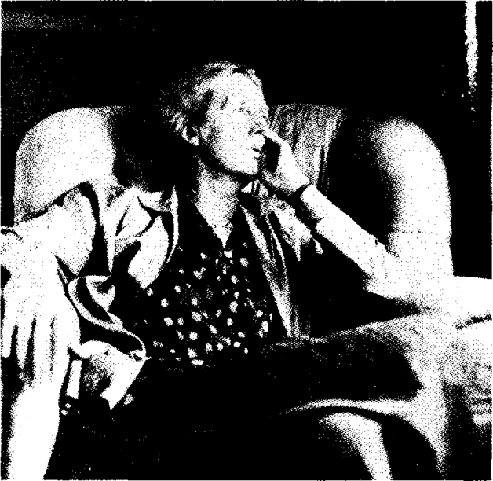

Bölüm 4
Virginia Woolf’un Kişiliği ve Akıl Hastalığı
Virginia Woolf’un sonunda kendi canına kıymasına neden olan delilik nöbetlerinde, çocukluğunda geçirdiği travmanın ve lezbiyen eğilimlerinin bir payı olduğu gibi, daha on üç yaşındayken çok sevdiği annesini ağır bir grip yüzünden yitirmesinin de büyük bir payı vardı. Ölümün gölgesi Virginia’nın üstüne düşmüştü bir kez. Annesinin ölümünden iki yıl sonra, Virginia on beş yaşındayken, anne bir kardeşi Stella ansızın öldü. Bu gencecik kız, annesi Julia Stephen’ın ölümü üzerine, üvey babası Sir Leslie Stephen’ın evinin hanımı olmuş, bu kalabalık ailenin sorumluluğunu yüklenmişti. Stella ansızın ölünce, Virginia, annesini ikinci kez yitirmiş gibi oldu. Derken, 1906’da, Virginia yirmi dört yaşındayken, kendisinden ancak bir yaş büyük, dolayısıyla ona en yakın olan erkek kardeşi Thoby, birlikte gittikleri Yunanistan’da yakalandığı tifodan ölüverdi. Virginia Woolf and her Works’ün (Virginia Woolf ve Yapıtları) yazarı Jean Guignet’ye göre, Thoby, dünyada en çok sevdiği erkekti belki de ve Virginia’nın mutsuzluğu, bunalımları, kardeşini yitirmesinden de kaynaklanıyordu. Jacob’s Room’da gencecik ölen Jacob’u, The Waves’de gene gencecik ölen Percival’ı, Thoby’den esinlenerek yaratmıştı.
Virginia Woolf ilk depresyonunu (depresyondan da öte, bir delirme nöbetiydi bu) 1895’te on üç yaşındayken annesinin ölmesi üzerine geçirdi. Bu delirme nöbetleri, intiharına kadar, belirli aralıklarla yinelendi. 1904’te gene ağır bir bunalıma girdi. Bir pencereden attı kendini. İyi ki, pencere çok yükseklerde değildi. Bu nöbetlerden haberi olmayan Leonard Woolf ile evlendikten bir yıl sonra, 1913’te, gene hastalandı. Bir şişe uyku hapı yuttu. Leonard Woolf, onu hemen hastahaneye götürdü, midesi yıkandı. Ona bakmak için üç dört kadın tutulduğu halde, hastabakıcıları onunla başa çıkamadılar. Virginia’yı özel bir hastahaneye kapatmak zorunda kaldılar. Bu nöbet 1915’e kadar sürdü. 1925’de Mrs. Dalloway’ı bitirip To the Lighthouse’a başladığı sırada ve daha sonraları da ağır nöbetler geçirdi. 1936’da iki ay hasta kaldıktan sonra “I have never been so near the precipice since 1913” (1913’ten beri uçuruma hiçbir zaman bu kadar yaklaşmamıştım) diye yazdı güncesinde.
Virginia Woolf, her zaman biraz deli olanlardan değil, ya düpedüz deliren ya da aklı tam başında olanlardandı. İyi olduğu sıralarda, onu en yakından tanıyanlar bile anlayamazdı bazen haftalarca, hattâ aylarca aklını yitirdiğini. 15 Ağustos 1924 güncesinde, beynini ışık dolu odalara benzetti. Bu odaların kimi zaman korkunç bir karanlığa gömüldüğünü hiç hesaba katmadan, “I like going from one lighted room to another, such is my brain to me: Lighted rooms” (Bir odadan ötekine geçmeyi severim. Beynim benim için öyledir: Aydınlık odalar) diye yazdı.
Virginia Woolfa “manic depressive” teşhisi konulmuştu. Ancak birkaç hekim şizofreniden söz etti. Hogarth Press, yani Woolf’ların kendi matbaaları Freud’un Collected Papers’ını (Toplu Yazılar) yayınladığı halde, psikanalize karşı biraz alaycı bir tutum benimseyen Virginia Woolf, psikolojik yöntemlerle tedaviye hiçbir zaman başvurmadı. Onun üzerine kitap yazanların bir kısmı -örneğin, Doroty Brewster ya da Monique Nathan- akıl hastalığı sanki ayıp bir şeymiş gibi, Virginia Woolf’un delirme nöbetlerine hiç değinmezler. Oysa Jean Guignet, Novalis’in delirmesi ya da Edgar Allan Poe’nun dipsomanisi göz önünde tutulmadan onları anlamanın yolu olmadığı gibi, Virginia Woolf’un da ara sıra delirdiğini hesaba katmadan, onu anlamanın yolu olmadığını söyler haklı olarak. Lytton Strachey’nin kardeşinin eşi olduğu için Virginia’yı yakından tanıyan psikiyatri uzmanı Alix Strachey, Virginia Woolf’un düşgücüyle deliliğinin iç içe olduğunu; deliliği tedavi edilseydi belki düşgücünü de yitireceğini söyler.
Virginia Woolf, şiddetli baş ağrılarıyla başlayan bu delirme nöbetlerinde, iğrenç ve korkunç sesler duyardı. Bu sesler, akıllara sığmayacak kadar çirkin sözler söylerdi ona. Güncesinde anlattığına göre, kimi zaman “Londra’nın ortasından biri bağırırdı (“ and from the heart of London some one cries”) Kimi zaman da bu sesler birbirilerine karışır “garip bir müzik, deli müziği, şangırdayan kırık dökük sesler” (“ strange music, mad music, jangled and broken soıınds”) çıkarırdı. Virginia Woolf, bayılma nöbetleri de geçirirdi. 17 Ağustos 1932 tarihli güncesinde bunlardan birini anlatır:
“I fainted again... The galloping hooves got wild in my head last thursday as I sat on the terrace with Leonard... My heart leapt, and stopped and leapt again... And the pulse leapt into my head and beat and beat and beat, more savagely, more quickly... I thought something will burst in my head if this goes on... Then I lay presiding like a most solicitous mother, over the shattered, splintered fragments of my body.”
(Gene bayıldım... Geçen Perşembe gecesi Leonard ile taraçada otururken, dört nala giden atlar azdı kafamda... Yüreğim zıpladı ve durdu; sonra yeniden zıpladı... Nabzım kafama fırladı ve vurdu, vurdu; gittikçe daha vahşice, daha hızlı... Bu böyle devam ederse, kafamda bir şey patlayacak sandım. Sonra, çok sevecen bir ana gibi davranıp, parçalanmış, kıymık kıymık olmuş bedenime egemen olmaya çalışarak, yattım.)
Delilik nöbetlerinde, bahçedeki kuşlar Yunanca şarkılar söylerdi Virginia Woolf’a. Ya da çiçeklerin arasına saklanan Kral Yedinci Edward, ağza alınmayacak küfürler ederdi. Hekimlerin, hastabakıcıların, herkesin ona kötülük ettiğini sanırdı. 1915’te Leonard Woolf’a karşı bile düşman kesilmiş, iki ay yüzünü görmek istememişti. Kendi bedeninden de tiksinir; yediklerinin dışkıya dönüşeceğini düşünerek, ağzına bir lokma yiyecek koymaz, kendini açlıktan öldürmeye kalkardı. Leonard Woolf’un kendi özyaşamöyküsünde anlattığına göre, kimi zaman da, hastalığının işlediği bir suçtan kaynaklandığı, tam olarak ne olduğunu bilmediği bu suç yüzünden cezalandırıldığı evhamına kapılırdı. Abuk sabuk sözler söyleyerek, günlerce hiç durmadan konuşurdu. Sonra, koma gibi bir uykuya dalar, bu uykudan bitkin uyanır, yavaş yavaş toparlanırdı.
Virginia Woolf, ara sıra delirdiğini bilirdi. Güncesinde “when I was mad” (ben deliyken) diye yazmaktan çekinmezdi. Hattâ bir yazar olarak, bu delilik nöbetlerinin yararını gördüğünü bile söylerdi. “They are most fruitful artistically... One becomes fertilized” (Sanat açısından bunlar- yani delilik nöbetleri- son derece verimli... İnsan daha bereketli oluyor) derdi. Ne var ki, zaman zaman delirmenin sanatına olumlu bir etkisi olduğunu düşünerek avunmaya çalışmasına karşın, akıl dengesini her an yitirebileceği korkusu hayatını zehir ediyordu. 1926’da güncesinde der ki:
“Woke up perhaps at three. Oh it’s beginning, it’s coming... The horror... Waves crash, 1 wish 1 were dead- 1 can’t face this horror any more. This is the wave speaking out over me.”
(Saat üçtü belki, uyandım. Ah başlıyor, geliyor... İğrençlik... Dalgalar çarpıyor, keşke ölsem- bu iğrençliğe dayanamıyorum artık. Benim üstümden konuşan bir dalga bu.)
25 Ekim 1920 güncesinde sorar:
“Why is life so tragic? So like a little strip of pavement over an abyss? I look down; I feel giddy; I wonder how I am ever to walk to the end... Like a lantern stood in the middle of a field my life goes up in darknes... Unhappiness is everywhere; just beyond the door; or stupidity which is worse.”
(Yaşam neden bu denli trajik? Neden bir uçurumun üstündeki küçük bir kaldırım şeridine benziyor? Aşağıya bakıyorum, başım dönüyor. Sonuna dek nasıl yürüyebileceğim diye merak ediyorum... Bir tarlanın ortasına konulan bir fener gibi, ışığım karanlığa boğuluyor... Mutsuzluk her yerde; tam kapının arkasında; ya da mutsuzluktan beter olan ahmaklık. )
Birkaç hafta sonra, 10 Kasım 1920 tarihli güncesinde, aşağıdaki uçuruma düşmeden, bu daracık kaldırımda biraz ilerleyebildiğini yazar. Tarihsiz bir mektubunda, sırtında çok ağır bir yükle bir çölde ilerlemek zorunda kalan küçük bir eşeğe benzetir kendini:
“The last donkey in the long caravansarai, crossing the desert... Burdened with bales... My memories, my possessions; what the past, its men and women, have laid on my back; saying... rise up little donkey, and go on your way, burdened... There’s no lying down; or laying aside; nor forgetting.”
(Çölü aşan uzun bir kervanın son eşeği... Sırtına yüklenen denkleri... anıları, sahip olduğu şeyler, geçmişin erkeklerle kadınlarının sırtına yükledikleri... Ayağa kalk, küçük eşek, diyorlar, sırtında yükün, yürü yolunda... Yatmak yok; yüklerini bir yana bırakmak yok; unutmak da
yok.)
Ne var ki, Virginia Woolf çektiği acıları açığa vuramazdı. Eniştesi Clive Bell’e göre, konuşurken herkesi büyüleyen, neşeli, pırıl pırıl, “göz kamaştıran” (“dazzling”) bir kadındı. Onu intiharından birkaç ay önce gören Christopher Isherwood, Virginia’nın hem neşeyle ışıldadığını söyler; hem de “bir büyünün etkisinde kalmış bir peri masalı prensesine” (“a fairy tale princess under a spell”) benzetir onu.
Delireceği korkusuyla her an ruhsal bir gerilim içinde yaşamak, Virginia Woolf’a yalnız acı çektirmekle kalmıyor; huyunu olumsuz etkiliyor, onu insanlardan uzaklaştırıyor, insanlara karşı katı ve acımasız yapıyordu. Eylül 1921 güncesinde, insanları pek sevmediğini kendi de itiraf eder. İki yıl sonra, 27 Haziran 1923’te daha da açıkça dile getirir bu duygusunu:
“I do not love my kind, I detest them, I pass them by. I let them break on me like dirty raindrops.”
(İnsanları sevmiyorum, nefret ediyorum onlardan, yürüyüp geçiyorum yanlarından. Pis yağmur damlaları gibi, üstüme düşüp dağılmaya bırakıyorum onları.)
Ne var ki, bu sevgisizliğe karşın, Joan Russel Noble’un derlediği Recollections of Virginia Woolf’tan (Virginia Woolf üzerine Anılar) anlaşıldığı gibi, Virginia, insanlara karşı sonsuz bir merak duyar, onları soru yağmuruna tutmaktan kendini alamazmış. Bu romancının, romandan çok yaşamöyküleri okumasını da buna bağlayabiliriz belki. Sorguya çektiği sayısız kişilerden biri olan Vita Sackville- West’in oğlu Nigel Nicolson’ın anlattığına göre, küçükken ilk karşılaşmalarından birinde, Virginia Woolf o gün ne yaptığını sormuş.

Çocuk, yatılı okuldan çıkıp eve geldiğini söyleyince, Virginia Woolf, bu kadarının yetmediğini, tâ başlangıçtan anlatmaya başlaması gerektiğini bildirmiş. Sürekli sorular sorarak, kaçta uyandığını, nasıl uyandığını, uyandıktan sonra ne yaptığını, o günü nasıl geçirdiğini tüm ayrıntılarıyla bir bir öğrenmek istemiş. Psikiyatr Alix Strachey’ye bakılacak olursa, bu aşırı merak, Virginia Woolf’un gerçek yaşamdan zaman zaman koptuğunu bilmesinden, gerçeklere tümüyle yabancılaşmamak için büyük bir çaba göstermesinden kaynaklanıyordu. Ama bu çabalarına karşın, insanlarla tam bir iletişim kurmakta zorlanıyordu gene de. Onu tanıyan eleştirmen Lord David Cecil şöyle der:
“She was rather like a mermaid. I thought she was like a beautiful mermaid who’d swim out of the sea to have a look at us all - very inquisitive, very interested. But like a mermaid.”
(Bir denizkızı gibiydi biraz. Hepimize şöyle bir bakmak için denizden yüzerek gelen güzel bir denizkızıydı diye düşünürdüm- çok meraklıydı, çok ilgiliydi. Ama bir denizkızı gibiydi.)
Bize kalırsa Virginia Woolf, ancak kendi düşgücüyle yarattığı insanlara sevgiyle yaklaşır; bir denizkızı gibi, onlara uzaktan bakmazdı. Örneğin, “An Unwritten Novel” (Yazılmamış Bir Roman) adlı öyküsünde ele aldığı anayla oğulu taparcasına sever:
“Mysterious figures. Mother and son. Where are you?.. Where ever I go, mysterious figures, I see you, turning the corner, mothers and sons. Yes, you, you, you. I hasten, I follow... It’s you, unknown figures, you I adore. If I open my arm, it’s you I embrace, you I draw to me.”
(Gizemli kişiler. Ana oğul. Neredesiniz?... Gizmli kişiler, nereye gitsem sokağın köşesini döndüğünüzü görüyorum. Analar ve oğullar. Evet, siz, siz, siz. Acele ediyorum, peşinizden gidiyorum... Siz bilinmeyen kişiler, taptığım sizsiniz. Kollarımı açarsam, sizi kucaklıyorum, sizi bağrıma basıyorum.)
Ne var ki, Virginia Woolf, gerçek yaşamda gördüğü insanlara kollarını açmıyor, onları bağrına basmıyordu. Yeğeni Quentin Bell’in anlattıklarına göre, çektiği akıl hastalığı zamanla onu kötü yönden etkilemiş, insanlara karşı kırıcı ve acımasız yapmıştı. Virginia Woolf’un, James Joyce ve Katherine Mansfield konusunda sözleri bizi fena halde tedirgin eder: Virginia Woolf, James Joyce’un roman türünün değişmesinde ne denli büyük bir rol oynadığını bilir; ileride göreceğimiz gibi onun bilinç akımı yönteminden yararlanır; Ulysses’in bir bölümünün Hogarth Press’te yayınlanmasını ister; hattâ makalelerinde Joyce’un avant-garde romanın en değerli temsilcisi ve Ulysses’in bir başyapıt olduğunu yazardı. Gelgelelim, güncesindeki tutumu bambaşkadır. Kendi kendini yetiştirmiş bir aşağı sınıf aydını saydığı Joyce’u yüksek sınıftan bir aydının kibirli tavrıyla hor görür. Böylelerini “çiğ, çarpıcı ve eninde sonunda mide bulandırıcı” (“raw, striking and ultimately nauseating”) bulur. Kin saçarak, Joyce’u, ergenlik sivilcelerini kaşıyan bir yeni yetmeye benzetir. Ulysses, kültürden yoksun, müstehcen bir kitaptır. T.S. Eliot’un böyle bir yapıtı Savaş ve Barış kadar önemsemesine şaşar. Ulysses’in ancak ilk iki yüz sayfasını okuyabilmiş ve “sözle ifade edemeyeceği bir can sıkıntısı” (“an unutterable boredom”) çekmiştir. Tümünü zorla okuyup bitirdikten sonra da, Ulysses’in “hedeflediğini yapamadığı” (“I think it is a misfire”) kanısına varır. Lytton Strachey’ye bir mektubunda da Joyce’u alaya alır: “First there is a dog that pisses, then a man that farts, and one can be monotonous even on that subject” (İlkin çiş yapan bir köpek var. Sonra, osuran bir adam. Böyle konuları ele alırken bile, insan tekdüze olabilir.) Rebecca West, Virginia Woolf’u, James Joyce üzerine, “insanı şaşırtan, nerdeyse ahmakça” (“astonishing, almost stupid”) sözler söylemekle suçlamakta haklıdır. Bunun nedeni de, Joyce’u kıskanmasıdır aslında. Bu kıskançlık, Jacob’s Room’u yazarken, güncesinde, “what I am doing is probably better done by Mr Joyce” (her halde Mr. Joyce benim yaptığımın daha iyisini yapıyor) demesinden de anlaşılır. İşin içine kadınlar arasındaki rekabet sorunları da girdiği için, Virginia Woolf’un Katherine Mansfield ile ilişkisinde, kıskançlık daha da belirgindir. Virginia Woolfun güncesini okurken onu yıllar yılı sanatın ermişlerinden biri sayan bizler gibi saf insanlar, çağdaşı yazarların en değerlilerinden biri olan Katherine Mansfield’i nasıl rezil etmeye kalktığını görünce şok geçirir.
Leonard Woolf, çok sağduyulu davranmış, eşinin 1915’den ölünceye dek tuttuğu, el yazısıyla yirmi altı ciltlik güncesinden, ancak yazarlığıyla ilgili bölümleri, 1953’de A Writer’s Diary (Bir Yazarın Güncesi) adıyla yayınlamıştı. Virginia Woolf’un da istediği buydu aslnda:
“What’s to became of all these diaries, I asked myself yesterday. If I died what would Leo make of them? He would be disinclined to burn them; he could not publish them. Well, he should nıake up a book of them and burn the body.”
(Dün kendi kendime sordum, ölürsem ne olacak bütün bu günceler? Leo ne yapacak bunları? Yakmak istemeyecek; yayınlayamaz da. Eh, bunlardan bir kitap çıkarıp, geri kalanı yakmalı bence.)
Leonard Woolf, eşinin düşündüğünü yapmakla, Virginia Woolf’un yazar olarak anlaşılması için özenle okunması gereken bir kitap çıkardı ortaya. Çünkü A Writer’s Diary’de, onun her romanını nasıl tasarladığı, nasıl yazdığı, değişiklikler yaparak nasıl tekrar tekrar üstünden geçtiği ayrıntılı olarak anlatılır. Üstelik Virginia Woolf bir yandan yazarken, bir yandan da sürekli okuduğu için, bu kitap, edebiyat üzerine birbirinden ilginç eleştiri parçalarıyla ve değerlendirmelerle doludur.
Virginia Woolf’u yakından tanımamız için, A Writer’s Diary yeter de artar da bizlere. Gelgelelim, yazarın yeğeni Quentin Bell’in eşi Anne Oliver Bell, bir işgüzarlık yaptı: Hem A Moment’s Liberty (Bir Anlık Özgürlük) adıyla Virginia Woolf’un güncesinden parçaları; hem de 1977’de başlayarak, bütün günceyi cilt cilt yayınlamaya koyuldu. Ne yazık ki, bu günce, yer yer çok ilginç olmakla birlikte, Virginia Woolf gibi büyük bir yazarın, insan olarak olumsuz, kötü niyetli, dedikoducu, fitne demeyelim de hınzır yanlarını gözler önüne serer. Romanlarının kişilerinde, Mr. Dalloway’de, To the Lighthouse’daki Mrs. Ramsay’de, Between the Acts’daki yaşlı Mrs. Swithin’de bunca gelişmiş olan sevecenliğin ve merhamet duygusunun onda ne denli eksik olduğunu gösterir bizlere. Kusurlu ve eksik yanlarının kendi de bilincinde olduğu için, kendini “despicable” (hor görülmesi gereken) bir insan bulduğu olur. Katherine Mansfield’in ölümünden sonra, onu kıskandığını da itiraf eder: “I am jealous of her writing - the only writing I have ever been jealous of” (Onun yazdıklarını kıskanıyordum... ömrümde kıskandığım tek yazılardır onlar. ) Katherine Mansfield’in ona hayran olduğunu da anlatır. Onunla dostluk kuramamasının pişmanlığı içindedir; çünkü onunla, yeryüzünde başka hiçbir kimseyle olmayan ortak bir yanı bulunduğuna inanır.
Virginia Woolf’un, yalnız James Joyce’a ve Katherine Mansfield’e karşı değil, başkalarına karşı tutumu da bizi fena halde üzer. Örneğin, sanat tarihçisi ve ressam Roger Fry, onun en yakın dostlarından biridir. Roger Fry ölünce, Virginia Woolf 1940’da onun üzerine uzun bir kitap da yazmıştır. Ama güncesinde, Fry’ın sergisinde ancak üç dört küçük desenin satıldığını; öteki tabloların, bir baloda hiç kimsenin dansa kaldırmadığı çirkin kızlar gibi duvarda asılı kaldığını söyler. Ve “kötü resimler satılmaz” (bad pictures don’t sell) diye ekler acımasızca. Akıl hastalığının ne korkunç bir dert olduğunu kendi bildiği halde, aynı acımasızlığı, T.S.Eliot’un akıl hastası ilk eşi Vivien’e gösterir: “Making me almost vomit, so scented, so powdered, so egotistic, so morbid, so weakly” (Öyle parfümlü, öyle pudralı, öyle bencil, öyle sağlıksız, öyle güçsüz ki, nerdeyse kusacaktım) der. Londra’da gezintiye çıkarılan bir geri zekâlılar kafilesini iğrenç bulup, “they should certainly be killed” (bunları mutlaka öldürmek gerek) diye kesip atar. Kendisinin de bunu yazdıktan birkaç ay sonra aklını yitireceğini bildiğimiz için, bunu okuyunca çok fena oluruz.
Virginia Woolf ile ilgili anılarını anlatanların yazdıklarından anlaşıldığı gibi, sanki dilinin ucunda sivri bir iğne varmışcasına, herkes ona çekinerek yaklaşırmış. Çünkü sözleri yalnız iğneleyici değil, çok da güldürücü olduğundan, dilden dile dolaşır, kolayca unutulmazmış. Hogarth Press’te çalışan Frances Marshall “the terrifying Virginia Woolf” (insanın ödünü koparan) dediği yazarın, onun bağrına sapladığı dikenli oklara bile hayran kaldığını söyler. Virginia Woolf’un yeğeni Angelica Bell’e göre, teyzesinde “saydam bir güzelliğin bir ifritin diliyle birleşmesi” (“this combination of limpid beauty and a demon’s tongue”) çevresindekileri şaşkına döndürürmüş. Örneğin, tatlı haller takınıp, yakın dostu T.S. Eliot’un bir ara banka memuru olmasına değinerek, “İt’s such a pity, Tom, that you started being a poet instead of remaing in a bank. By now you might have been the manager of the Bank of England” (Ne yazık ki, Tom, bir bankada kalacağına, şair olmaya kalktın. Şimdi İngiltere Bankasının müdürü olabilirdin) dermiş. Virginia Woolf’un böyle hınzırca sözler söylemesinin ve güncesinde sağa sola çatmasının nedeni, her an delirebileceği korkusuydu belki de. Kendi akıl sağlığına güvenini yitirdikçe, başkalarından hıncını almak istiyordu her halde.
Bu saldırganlığı bir yana, Virginia Woolf’un kişiliğinin bizi en çok üzen yanlarından biri de, anti-semitizmi, yani Yahudilere karşı neredeyse ırkçı tutumudur. Buna yalnız üzülmekle kalmayız, çok da şaşarız; çünkü o kadar sevdiği o eşsiz kocası Leonard Woolf da Yahudidir. Onunla evlenmeden önce, Virginia bu yüzden bir hayli tedirgin olmuş, bir mektubunda “you seem so foreign to me” (bana öyle yabancı görünüyorsun ki) demişti. Eşinin ailesiyle tanıştıktan sonra da, sanki Yahudilerin sesleri ve gülüşleri Hıristiyanlarınkin-den farklıymış gibi, “I do not like the Jewish voice; I do not like the Jewish laughter” (Yahudi sesini sevmiyorum; Yahudi gülüşünü sevmiyorum) diye yazmıştı.
Ne var ki, kendisi gibi Yahudilerden hoşlanmayan Hitler’in iktidara gelişi, İtalya ve Almanya’da faşizmin egemenliği Virginia Woolf’u perişan etti. Üstelik ayrıca düşkün olduğu yeğeni Julian Bell, İspanya İç Savaş’ında faşistlere karşı çarpışırken öldürülmüştü. Aynı yıl İspanya’dan kaçan cumhuriyetçi kadınların, çocuklarıyla birlikte Londra’da düzenledikleri yürüyüşü seyrederken, hüngür hüngür ağladı. Faşizme karşı makaleler yazmak istedi. Faşizmin sonucunun ikinci bir dünya savaşı olacağını o kadar iyi biliyordu ki, 1935’te “The Next War” (Bundan Sonraki Savaş) adlı bir makale yazdı ve daha sonraları, bunu The Three Guineas’e (Üç Gini) ekledi. 1936 Aralık ayında komünist Daily Worker gazetesinde “Why Art Follows Politics” (Sanatın Politikanın Peşinden Gitmesinin Nedeni) adlı bir makalesi çıktı. Bu yüzden de Nazi şeflerinden Himmler’in kara listesine girdi. Naziler İngiltere’yi işgal etseydi, Bertrand Russell, E.M. Forster, G.B. Shaw, eşi Leonard Woolf ve başka İngiliz aydınlarıyla birlikte hapse atılacaktı.